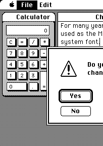

Mac does Java... again

Mac users have become accustomed to an unhappy pattern when it comes to technologies not prioritized by Apple Computer.
The first stage is—as always—denial. Color monitors? Just a fad. An MP3 player as good as WinAMP? I buy my music. Snappy, standards-compliant web browsing? Who needs that, when you have Netscape 3?
Eventually the value of a technology (and its vacancy on Macintosh) becomes too obvious to ignore. Someone besides Apple creates a pretty good product that Mac users will adamantly insist is better than what’s available on other platforms. Internet Explorer for Mac and SoundJam MP were two such products.
In the final stage, Apple reveals that their deflector shields are quite operational and annihilates the competition. (Rarely, they’re nice enough to buy the competition first.) And for a short time, we really do have it better than Windows users.

Unfortunately for us, though, Death Stars just don’t dominate for that long. Safari, we love you, but honestly—where is your incremental find function? And your Flash blocker? Have you guys seen the Web lately? That stuff is essential! And iTunes? How many useful new features have you given us in your past six versions? (No, DRM reinforcements do not count.)
Because it’s hard for Mac users to jump ship when half their net worth is invested in the platform, it’s easy for Apple to slack off on established products. And they certainly don’t have to worry about new competition on their turf—you’re better off trying to index the Web better than Google than taking on iPhoto.
So it has been with Java on the Macintosh. First we didn’t need it. Then we didn’t need it to be fast. Then Apple took over for Sun with the MRJ and we were sittin’ pretty for a few months with an up-to-date Java as fast as on Windows.

After that we entered the cycle of mediocrity, where every new API feature and every JVM optimization would take months (or years) to travel from Santa Clara to Cupertino. It’s great when an Apple-polished JVM is new, but that thrill lasts only until the next rollout from Sun.
Time to break out the Champagne, folks! This week Apple’s J2SE Release 4 arrived via Software Update, the first version they deemed good enough to be the “default.” Now you can run Maven, Netbeans, Eclipse, or just plain java -version in the latest JVM without having to specially configure each one. For me that meant deleting a few lines from the Databinder Prerequisites. In general it means that Mac users can be happy on Java without having to fake it.
At least, until Sun cruises up in the Mustang SE 6. Feel free to take your time with that one, guys.
Codercomments
Well, Apple released a first version of Java 6 a few days ago, so the future might be here already. :-)
Wow, you’re right. But where is the download link? I looked all over ADC and can’t find it. (Not that I have an Intel Mac to run it on.) Perhaps up-to-date Java finally is a priority at Apple. Certainly there weren’t Mac betas of Java 5 this early in its release cycle.
I see you responded to my related comments over at Eelco’s, too. I still say that Eclipse disappoints on Mac. Maybe it’s no worse than Eclipse on Windows, but it’s clunky compared to Mac-only software. Whatever Apple is doing to help Mac-SWT along, they need to do more of it.
Add a comment